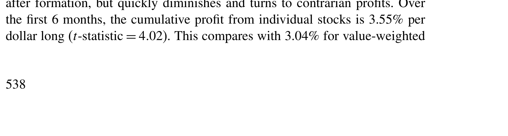
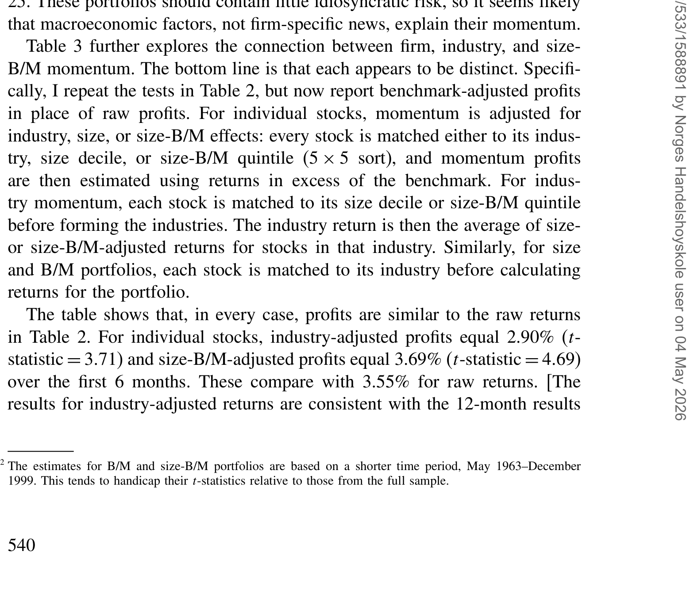
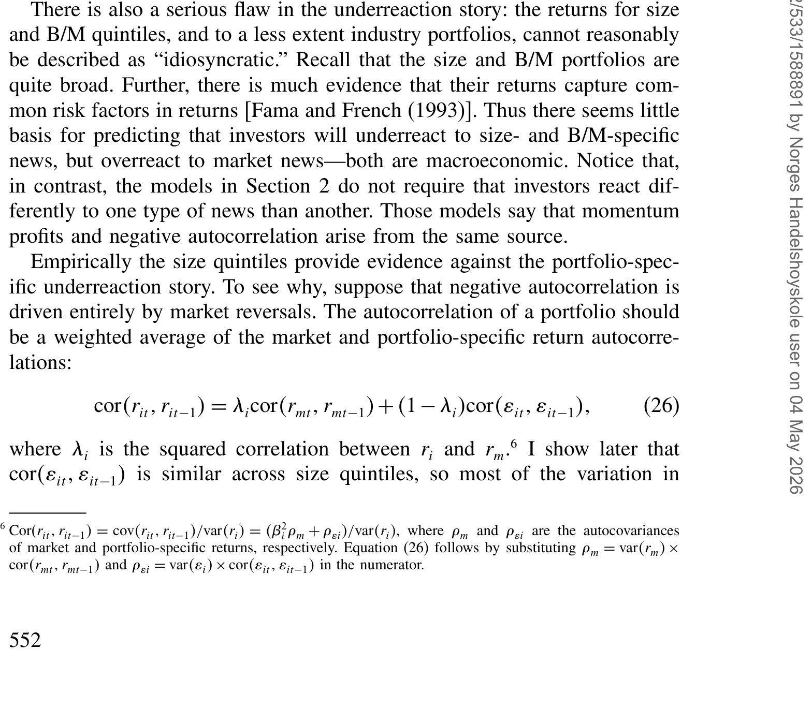
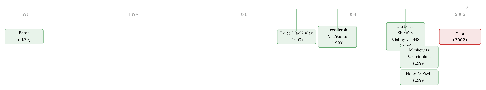

动量到底是「谁」在续命？——当输家与赢家其实在抄同一张作业
本文读的是 Lewellen (2002, Review of Financial Studies)：把动量 (momentum) 从个股搬到规模、账面市值比等「很分散」的组合上，它依然强劲（六个月累计 2–4%，t 值常常大于 4）；但这些组合几乎不含个股特异信息，于是「投资者对公司消息反应不足」的行为金融故事就讲不通了。作者把动量拆进 Lo–MacKinlay 的三项分解，发现真正的引擎不是正自相关，而是股票之间偏负的「领先—滞后」关系——他称之为「过度共动 (excess covariance)」。
1 引言：一个越解释越糊涂的异象
动量大概是资产定价里最顽固、也最让人脸红的异象之一。Jegadeesh 和 Titman (1993) 把话说得很清楚：过去 3–12 个月的赢家，会在接下来几个月里继续跑赢输家。他们的原话是，1965 到 1989 年间，过去 12 个月收益最高那一档（top decile）的股票，在随后六个月里平均要比最低一档高出 6.8%，t 值 3.40。这个数字之所以让人坐立不安，是因为它直接戳穿了「弱式有效 (weak-form efficiency)」——价格里居然还藏着仅凭历史收益就能榨出来的钱。
学界几乎是一边倒地把这个异象归到「公司特异收益 (firm-specific returns)」头上：投资者要么对一家公司的消息反应不足 (underreaction)，要么先反应不足、后过度反应。Barberis, Shleifer, and Vishny (1998)、Daniel, Hirshleifer, and Subrahmanyam (1998)、Hong and Stein (1999) 这三篇当时最有影响的行为模型，骨子里讲的都是同一个直觉：动量是「人对个股信息处理不当」的产物。
这篇文章想做的，恰恰是把这个共识掀翻。它的策略不是再写一个模型去拟合动量，而是问一个看似笨拙、却极其要命的问题：
如果动量真的来自「公司特异消息」，那它就应该在足够分散的组合里被稀释掉。可一旦它没被稀释掉呢？
接下来全文，其实就围绕这一个问题反复打磨。
2 第一幕：把动量从「个股」搬到「很大的篮子」里
首先，作者要换一个测试场。Jegadeesh-Titman 用的是个股，Moskowitz and Grinblatt (1999) 把动量搬到了行业组合上，发现表现最好的行业会继续跑赢最差的行业。Lewellen 顺着这条路再往前推一大步：他把股票按规模 (size) 和账面市值比 (book-to-market, B/M) 分成 5、10、15 档，再做 9、16、25 个的双重排序组合。
这些组合有多分散？看一眼描述统计就知道了：规模十分位组合每个平均装着 347 只股票（1941–1999），16 个规模-B/M 组合每个平均 199 只（1963–1999），行业组合平均 231 只。换句话说，它们早就把任何一家公司的「八卦」摊薄到可以忽略——作者干脆把这些组合的收益形容为「宏观经济式 (macroeconomic)」的。
测动量用的不是 Jegadeesh-Titman 的十分位多空，而是 Lo and MacKinlay (1990) 那个更顺手的「加权相对强弱 (weighted relative strength strategy, WRSS)」权重：
这个权重的妙处在于：它不只押注两端的极值，而是让每一只跑赢平均的资产都拿到正权重。这样既能无缝套到只有 5–25 个成分的组合上，又能（这是后面真正关键的一步）直接和收益的自相关结构挂上钩。表里的数字都被重新标定成「做多 1 美元、做空 1 美元」的口径。
结果如表 2 所示，动量不仅没被分散掉，反而活得更好。

Table 2: reports momentum profits using the different sets of portfolios
把数字摆出来：头六个月里，个股的累计利润是每美元做多 3.55%（t = 4.02）；价值加权行业是 3.04%、等权行业 3.65%（t = 4.75 和 5.62）。而那些「本不该有动量」的分散组合呢——价值加权规模五分位 2.56%（t = 4.16），价值加权 B/M 十分位 2.14%（t = 2.99），25 个价值加权规模-B/M 组合 3.23%（t = 4.18）；换成等权，三个数字分别飙到 3.02%、4.61%、3.93%（t = 4.16、5.97、4.93）。这些 t 值换算成夏普比率毫不逊色：t = 4 在全样本里对应年化夏普约 0.15，在 1963 年后的短样本里约 0.19，而同期 CRSP 价值加权指数也不过 0.18。
更刺眼的是一个对照：把组合分得更粗（5 档而非 15 档、9 个而非 25 个）几乎不改变利润。idiosyncratic 风险被一层层抹掉，动量却纹丝不动。
这一步看似平淡，其实已经把行为金融的主流叙事逼到了墙角：如果动量来自「对公司消息反应不足」，那它必须随着组合变分散而衰减。它没有。
3 这是谁的动量？——三种「身份」互不替代
接着，一个自然的问题是：行业动量、规模/B/M 动量、个股动量，会不会只是同一件事换了三张脸？
作者在表 3 里做了一次干净的「基准调整 (benchmark-adjustment)」：测个股动量时，先把每只股票减去它所属的行业（或规模档、规模-B/M 档）的收益；测规模/B/M 动量时，先把每只股票减去它所属的行业收益。如果某一种动量只是另一种的影子，调整之后它就该塌掉。
结果是：谁也没塌。个股经行业调整后，头六个月利润仍有 2.90%（t = 3.71），经规模-B/M 调整后甚至是 3.69%（t = 4.69），与未调整的 3.55% 几乎一样。规模和 B/M 动量在剔除行业后同样稳如泰山。

Table 3: further explores the connection between firm, industry, and size-
结论很硬气：个股、行业、规模/B/M 三种动量是彼此独立的来源，谁也不能把谁吸收掉。这意味着——要么公司特异收益根本不解释动量，要么动量本就有多个来源。一个自洽的故事，必须解释为什么动量出现在个股和规模五分位里，却在市场层面消失（市场收益若有什么的话，是反转的迹象）。现有的行为模型，没有一个预测得了这种模式。
4 把动量拆成三盏灯：Lo–MacKinlay 的分解
但真正关键的一步，在于不再停留于「利润有多大」，而是问「利润从哪来」。这就要请出本文的分析骨架——Lo and MacKinlay (1990) 的利润分解。
直觉上，一只过去跑赢的股票，将来继续跑赢，只可能有三个原因：(1) 它自己的收益正自相关，过去高预示将来高；(2) 它与别的股票的滞后收益负相关——别人过去表现差，反而预示它将来好（这就是「领先—滞后 (lead-lag)」或交叉序列相关）；(3) 它干脆就有一个比别人高的无条件均值。把这三盏灯写成数学，对上面那个 WRSS 权重取期望，可以得到（沿用 Lo–MacKinlay 的记号，\(\Omega\) 为收益的一阶自协方差矩阵 \(\Omega = E[(r_{t-1}-\mu)(r_t-\mu)']\)，\(\iota\) 为全 1 向量）：
$$ E[\pi_t] \;=\; \frac{N-1}{N^{2}}\,\operatorname{tr}(\Omega)\;-\;\frac{1}{N^{2}}\Big[\iota'\,\Omega\,\iota-\operatorname{tr}(\Omega)\Big]\;+\;\frac{1}{N}\sum_{i=1}^{N}\big(\mu_i-\mu_m\big)^2 $$
我们一项一项地读：
- 第一项 \(\dfrac{N-1}{N^2}\operatorname{tr}(\Omega)\) 收集的是所有股票的自协方差（对角线）。自相关为正，动量利润为正——这是「反应不足」故事最爱的通道。
- 第二项 \(-\dfrac{1}{N^2}\big[\iota'\Omega\iota-\operatorname{tr}(\Omega)\big]\) 是交叉序列协方差（非对角线）之和，前面带个负号。也就是说，股票之间的领先—滞后关系若为负，动量利润反而为正。
- 第三项 \(\dfrac{1}{N}\sum(\mu_i-\mu_m)^2\) 是各股无条件均值的横截面方差，恒为非负，是一份「与时间无关」的恒定贡献。
这一步的代数细节完全遵循 Lo and MacKinlay (1990)；这里给出的是「买赢家」动量方向（与他们的反向策略符号相反）。它的价值在于：它把一个含糊的行为学叙事，翻译成了三个可以分别去数据里量出来的量。
读懂了这盏三灯，下一幕的悬念就摆好了：到底是哪一盏灯，点亮了动量？
5 第二幕：自相关是负的，领先—滞后更负
于是作者掉转枪口，去估这些组合的自相关与交叉序列相关。他算的是「年度收益」与「未来逐月收益」之间的相关，一直看到未来第 18 个月。
数字相当反直觉。1941–1999 年间，一个行业的年度收益，与它两个月后的月收益之间，相关系数平均只有 −0.005；随后稳步下滑，到第 10 个月跌到 −0.064，之后才开始回升。规模和 B/M 组合的形态一模一样，到第 10–11 个月跌到约 −0.070。交叉序列相关同样是负的，走的还是同一条曲线。

Table 4: provides some guidance for distinguishing among the models
如表 4 所示，这里藏着全文的「反转」：自相关是负的，按第一项它本该拖累动量；但领先—滞后效应比自相关更负，而第二项前面那个负号，把「更负的交叉序列相关」翻译成了「更强的动量利润」。一减一加，净额为正。用作者自己的话说：领先—滞后效应往往强于自相关，而正是这个差额，造出了动量利润。
换句话说，动量的引擎从来不是「股票记得自己」，而是「股票们彼此牵连得太紧」。
6 落点：不是「反应不足」，而是「过度共动」
现在可以收网了。摆在桌面上的有两种解释。
第一种仍想救行为金融：也许投资者对「组合自己的消息」反应不足，却对「宏观事件」反应过度，于是动量与负自相关并存。但作者一句话就把它将死了——规模和 B/M 组合本身就是 5、10、15 个的大篮子，关于它们的消息，和关于整个市场的消息一样，本就该被归为「宏观」。你很难想象投资者会对「规模相关的宏观消息」反应不足，却对「市场宏观消息」反应过度。要让这个故事成立，得解释为什么投资者对某一类宏观消息反应不足、对另一类却不——没有哪个行为模型预测得了这种组合。
经验证据也站在反对一边：在规模五分位里，大盘股那一档（quintile 5）的特异风险最小，按「反应不足」逻辑它本该最负自相关；可它的自相关偏偏是第二接近零的。大、小盘之间的领先—滞后关系也大到无法用「市场反转」来搪塞。
于是反转落定：作者主张，真正的机制是过度共动 (excess covariance)——价格之间的协动，强于股利（基本面）之间的协动。他给了两个可能的微观故事：其一，投资者错以为「关于某家公司的消息」也含着别家公司的信息，于是价格比基本面更同步；其二，价格过度共动源于市场风险溢价的波动。两种情形里，动量利润都可以为正，哪怕收益是负自相关的。还有一个旁证：Fama and French (1993) 的三因子模型能吸收掉规模和 B/M 组合里大部分的序列相关——却吸不掉行业的。这恰恰说明，规模/B/M 动量更像「共同因子」的故事，而非公司层面的反应不足。
把「股票一起涨跌」这件事单独拎出来看，其实是近二十年资产定价里一条很深的暗线——被打包进同一个篮子、贴上同一个标签的股票，就会开始一起呼吸（关于这条线，可参见《被「打包」进同一个篮子的股票，就开始一起呼吸了》与《被「贴上同一个标签」的股票，就开始一起涨跌》）。Lewellen 的贡献，是把这条暗线和动量异象第一次接到了一起。
7 文献脉络
把镜头拉远，这条线的来龙去脉大致是这样的。
最早的地基是 Fama (1970) 的有效市场综述——价格不该被历史收益预测，这是动量要挑战的「原假设」。接着，Lo and MacKinlay (1990) 提供了那把分解利润的手术刀：把跨期收益拆成自相关、领先—滞后、横截面均值方差三块，谁也别想含糊过去。然后，Jegadeesh and Titman (1993) 用个股把动量钉成了一个无法回避的事实，随后一批行为模型——Barberis, Shleifer, and Vishny (1998)、Daniel, Hirshleifer, and Subrahmanyam (1998)、Hong and Stein (1999)——竞相用「对公司消息的反应不足/过度反应」去解释它。与此同时，Conrad and Kaul (1998) 提醒大家：横截面均值差异本身就能造出一部分「动量」。Moskowitz and Grinblatt (1999) 把战场推到行业层面。

本文 (Lewellen, 2002) 站在这一串工作的交汇处，做了一件别人没做的事：用分散组合证明动量不是公司特异的，再用 Lo–MacKinlay 分解证明它的引擎是负的领先—滞后，而非正自相关，从而把矛头从「反应不足」转向「过度共动」。这条「领先—滞后」的思路，后来在信息扩散的研究里被反复挖掘——大公司先动、小公司后知，本质上就是一种交叉可预测性（可参见《大公司先动，小公司后知——一条藏在「行业」里的信息暗线》）。
8 评论与延伸（Q&A + 研究方向）
(a) 几个可能的疑问
Q：动量和正自相关，到底是不是一回事？
不是，这恰恰是全文的核心区分。动量是横截面结果（赢家跑赢输家），自相关是时间序列现象（一只股票自己的过去与未来相关）。本文最反直觉的发现就是：组合的自相关其实是负的（约 −0.06 到 −0.07），动量却为正——因为负的领先—滞后效应比负自相关更强，在 Lo–MacKinlay 分解里贡献了净正的利润。
Q：会不会只是 Conrad-Kaul 那种「横截面均值差异」在冒充动量？
分解式的第三项 \(\frac{1}{N}\sum(\mu_i-\mu_m)^2\) 正是这个担忧，它恒为正。但本文的关键证据是动量的时间结构：利润在 7–9 个月后显著，之后衰减甚至反转。纯均值差异会带来恒定的、不随事件月衰减的利润，解释不了这种先强后弱、个股与行业还会反转的形态。所以均值差异最多是配角。
Q：把动量搬到规模/B/M 组合，会不会只是因为这些组合本身收益差异大？
作者用基准调整堵住了这条路（表 3）。剔除行业后，规模/B/M 动量几乎不变；剔除规模/B/M 后，个股与行业动量也几乎不变（个股从 3.55% 到 2.90%–3.69%）。三种动量互不替代，说明不是某个共同的横截面排序在重复计数。
Q：「过度共动」会不会只是换个名字的事后标签，什么都没解释？
这是最该警惕的一点。作者诚实地承认，几种解释「很难区分」——它们都预测交叉序列相关为负、组合自身收益持续。他靠的是排除法：反应不足要求投资者对一类宏观消息迟钝、对另一类灵敏，这个组合太牵强；而 Fama-French 三因子能吸收规模/B/M（却吸不掉行业）的序列相关，更像「共同因子过度波动」而非个股反应不足。这是间接证据，不是直接识别。
Q：等权和价值加权差这么多，是不是小盘股在驱动？
等权利润系统性更高（B/M 十分位等权 4.61% vs 价值加权 2.14%），确实说明小盘股权重更大时动量更强。但价值加权口径下动量依然显著（多数 t > 4），所以结论不靠小盘股的「微观结构噪声」撑着。这也提示：交易成本会吃掉等权口径里相当一部分账面利润。
Q：这对「市场是否有效」到底意味着什么？
它把战线从「投资者是否非理性」挪到了「价格协动是否过度」。即便每个投资者都不犯个股层面的错误，只要风险溢价的波动让价格比基本面更同步，动量就能出现。也就是说，动量未必是「错误定价」的铁证，也可能是一个尚未被现有因子模型刻画干净的共同风险结构。
(b) 几个可能的研究问题与提案
1. 把「过度共动—动量」搬到公司债市场。
【经济故事】公司债的横截面里，同评级、同行业、同久期的债券高度协动，且远比股票更依赖共同的流动性与信用因子。如果 Lewellen 的机制成立，债券动量应同样由负的领先—滞后驱动，而非自身正自相关。
【可行性】中。数据用 TRACE + Mergent FISD 构造评级/久期/行业组合，套用 Lo–MacKinlay 分解即可。难点是债券交易稀疏、月度收益噪声大，自协方差矩阵估计不稳；需要用规模充分的组合（而非个券）来压低估计误差，这反而和本文「用分散组合」的精神一致。
2. 外资持有人是「领先」还是「滞后」的那一端？
【经济故事】本文把动量归到股票间的领先—滞后，却没说清「谁领先谁」。一个自然的猜想是：信息处理更快的投资者类别（如外资机构）持有的股票，在交叉可预测性里扮演「领先」角色，而散户主导的股票「滞后」。
【可行性】中。需要个股层面的持有人结构（如 13F、或新兴市场的外资可投资度数据）与月度收益，按持有人类型分组后估交叉序列相关。识别上要小心：持有人结构与规模、流动性高度共线，需用持有人结构的外生变动（如指数纳入带来的被动外资流入）来切断混淆。
3. 过度共动随宏观风险溢价波动而变吗？
【经济故事】作者的第二个微观模型把过度共动归到市场风险溢价的波动。若如此，动量利润与「领先—滞后」的负向程度，应在风险溢价波动大的时段（如衰退、高不确定性期）系统性更强。
【可行性】高。用 VIX、期限利差、违约利差等做状态变量，把分解式的三项做条件化估计，看交叉序列项是否随状态变量摆动。数据现成，识别是相关性而非因果，但足以检验机制的方向性预测。
4. 交易成本会不会把「过度共动动量」吃干净？
【经济故事】本文报告的是账面利润，且等权口径远高于价值加权，暗示利润集中在难交易的股票上。一个值得做的问题是：在真实的价格冲击成本下，规模/B/M 组合动量是否还活着？
【可行性】高。把组合动量策略套上基于成交量/价差的冲击成本模型，逐月扣减后看净夏普。已有文献提示动量利润的「纸面」成分不小（可参见《动量利润的「纸面富贵」》与《换一把尺子，一半的动量利润就消失了》），本文的组合口径恰好提供了一个交易成本更低、值得重估的样本。
最后说说我的判断。这篇文章的贡献，不在于发现了一个新异象，而在于用一个极其朴素的设计——把动量放进足够分散的组合里——一刀切断了「动量 = 公司特异反应不足」这条当时几乎是默认的因果链，并用 Lo–MacKinlay 分解把引擎精确定位到「负的领先—滞后」上。这种「用最笨的对照实验逼出最干净的结论」的手法，比再添一个行为模型要有力得多。
对识别，我有两点保留。其一，「过度共动」更像一个对剩余项的命名，而非一个被独立识别出来的机制——作者自己也承认几种解释难以区分，最终靠的是排除法和 Fama-French 能否吸收序列相关的间接证据，而非一个能证伪的矩条件。其二，自协方差与交叉序列协方差的估计在月度、长滞后下方差很大，结论对样本期（尤其 1963 年后的短样本）和加权方式相当敏感，−0.005 到 −0.07 这种量级的相关，留给估计误差的空间并不小。
往后我最想看到的，是有人把这套分解接到持有人微观结构上：既然动量是「股票们抄同一张作业」，那总该能指认出谁是抄的人、谁是被抄的人。把「领先—滞后」从一个统计现象，还原成一条具体的信息（或流动性）传导链——那才是把这篇文章真正讲完。
参考文献
Barberis, N., A. Shleifer, and R. Vishny (1998). A Model of Investor Sentiment. Journal of Financial Economics 49, 307–343.
Conrad, J., and G. Kaul (1998). An Anatomy of Trading Strategies. Review of Financial Studies 11, 489–519.
Daniel, K., D. Hirshleifer, and A. Subrahmanyam (1998). Investor Psychology and Security Market Under- and Overreactions. Journal of Finance 53, 1839–1885.
Fama, E. (1970). Efficient Capital Markets: A Review of Theory and Empirical Work. Journal of Finance 25, 383–417.
Fama, E., and K. French (1993). Common Risk Factors in the Returns on Stocks and Bonds. Journal of Financial Economics 33, 3–56.
Fama, E., and K. French (1996). Multifactor Explanations of Asset Pricing Anomalies. Journal of Finance 51, 55–84.
Grundy, B., and J. S. Martin (2001). Understanding the Nature of the Risks and the Source of the Rewards to Momentum Investing. Review of Financial Studies 14, 29–78.
Hong, H., and J. Stein (1999). A Unified Theory of Underreaction, Momentum Trading, and Overreaction in Asset Markets. Journal of Finance 54, 2143–2184.
Jegadeesh, N., and S. Titman (1993). Returns to Buying Winners and Selling Losers: Implications for Stock Market Efficiency. Journal of Finance 48, 65–91.
Jegadeesh, N., and S. Titman (2001). Profitability of Momentum Strategies: An Evaluation of Alternative Explanations. Journal of Finance 56, 699–720.
Lewellen, J. (2002). Momentum and Autocorrelation in Stock Returns. Review of Financial Studies 15(2), 533–563.
Lo, A., and A. C. MacKinlay (1990). When Are Contrarian Profits Due to Stock Market Overreaction? Review of Financial Studies 3, 175–205.
Moskowitz, T., and M. Grinblatt (1999). Do Industries Explain Momentum? Journal of Finance 54, 1249–1290.